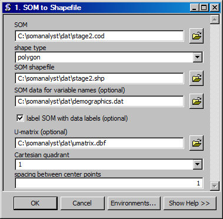

SOM to Shapefile
Creates a shapefile from a SOM codebook file.
ArcGIS Reference

Parameters
- SOM
- The input SOM codebook file from which to create a shapefile.
- shape type
- The type of shapes to use for the SOM.
- SOM shapefile
- The output shapefile.
- SOM data for variable names
- The data that contains the variable names.
- label SOM with data labels
- Label the SOM with the values from data that is the best match.
- Cartesian quadrant
- The Cartesian coordinatein which to place the SOM.
- spacing between center points
- The distance between the ceneter points of units in the SOM.
Code Reference
-
uiCODtoSHP.CODtoSHP(inName, outName, shapeType, labelData, labelNeurons, radius, quadrant, umatrix=False)
Creates a shapfile from a codebook file.
| Arguments : |
- inName
The input codebook filename.
- outName
The output shapefile name.
- shapeType
The type of shapes to create, either polygon or point.
- labelData optional
A data file that contains the labels for the column values.
- labelNeurons optional
Whether or not neurons should be labeled by their best match to the data.
- radius optional
The radius of the polygons to create.
|
|---|